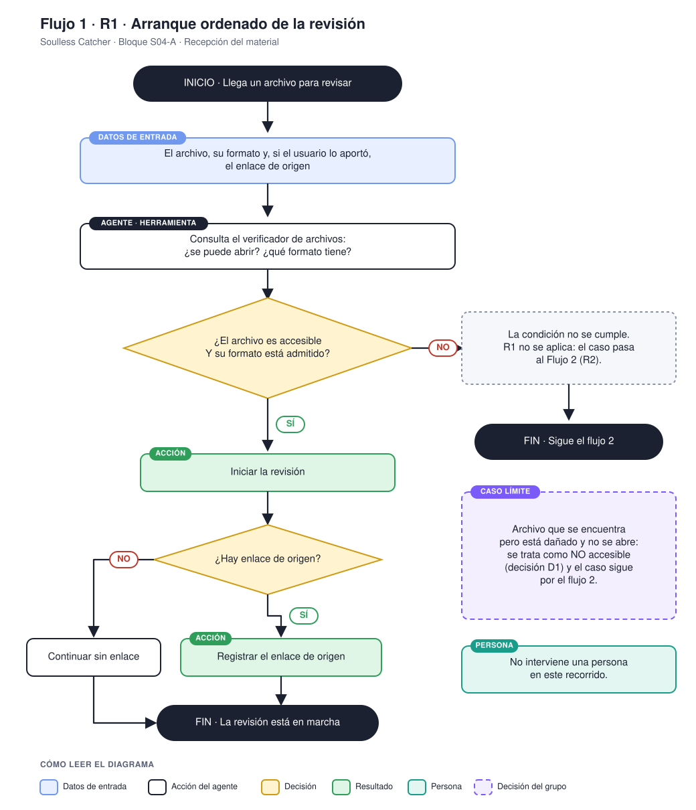
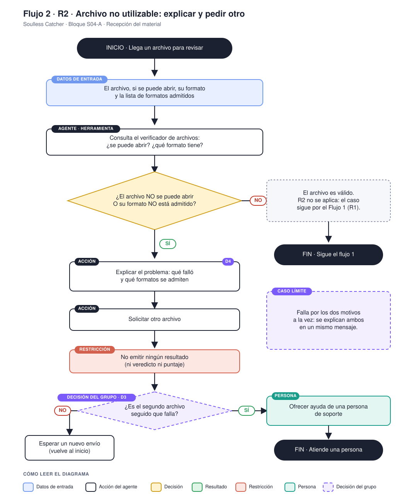

Verificación de contenido digital
Soulless Catcher
Asistente para revisar imágenes y videos sospechosos de haber sido generados con IA.
Soulless Catcher es una startup creada por estudiantes del IFTS 16, que definieron sus condiciones de funcionamiento mediante lógica proposicional. Nosotros, el Grupo 25 del IFTS 29, proponemos cómo resolver dos de esas reglas con agentes.
- Bloque asignado
- Recepción del material (S04-A)
- Equipo
- BlueTech: Javier López, Rocío Arenas, Facundo Sánchez y Damián Gorosito
La necesidad
Quien recibe una imagen o un video dudoso quiere saber si puede confiar en él. Antes de revisar nada, el servicio tiene que recibir bien el material: comprobar que se puede abrir, que es de un formato que sabe revisar y, si el usuario lo indica, anotar de dónde viene.
Las dos reglas que nos tocaron cubren justamente ese primer paso. Para cada una proponemos un futuro agente y dibujamos su recorrido. Es una propuesta de diseño: nada de esto se ejecuta ni se conecta a servicios reales.
Sentencia R1
Propuesta 1 · Arranque ordenado de la revisión
Si el archivo es accesible y su formato está admitido, el sistema inicia la revisión y registra el enlace de origen cuando está disponible.
Beneficio. La revisión solo comienza con material utilizable y cada informe queda con su origen registrado cuando existe, lo que da trazabilidad. El usuario sabe enseguida que su pedido ya está en marcha.

Qué entra, qué se decide, qué se hace y cómo termina
- Datos que entran
- El archivo, su formato y, si el usuario lo aportó, el enlace de origen.
- Qué se decide
- Si el archivo es accesible y su formato está admitido. Las dos condiciones tienen que cumplirse a la vez.
- Acción propuesta
- El agente consulta un verificador de archivos. Si todo está bien, inicia la revisión y registra el enlace de origen solo si existe.
- Resultado esperado
- La revisión queda iniciada, con un registro que indica el origen del material o que no se informó ninguno.
Excepciones e intervención humana
- Archivo válido pero sin enlace de origen
- La sentencia pide registrar el enlace “cuando está disponible”, así que la revisión comienza igual y el registro indica que no hay enlace.
- Archivo que se encuentra pero está dañado
- No se puede abrir, entonces se trata como no accesible y el caso sigue por el flujo 2. Es una decisión del grupo (D1).
- Intervención humana
- No interviene una persona en este recorrido: es el camino normal.
Recorridos de comprobación
| Caso | Se cumple la condición | Resultado |
|---|---|---|
| Imagen que se abre, formato admitido, con enlace de origen | Sí | Se inicia la revisión y se registra el enlace. |
| Video que se abre, formato admitido, sin enlace | Sí | Se inicia la revisión, sin enlace registrado. |
| Documento de texto (formato no admitido) | No | R1 no se aplica: el caso pasa al flujo 2. |
Sentencia R2
Propuesta 2 · Archivo no utilizable: explicar y pedir otro
Si el archivo no puede abrirse o su formato no está admitido, el sistema explica el problema y solicita otro archivo sin emitir un resultado.
Beneficio. Evita informes engañosos sobre material que no se pudo ver. El usuario sabe exactamente qué corregir, en lugar de recibir un error genérico.

Qué entra, qué se decide, qué se hace y cómo termina
- Datos que entran
- El archivo, si se puede abrir, su formato y la lista de formatos admitidos.
- Qué se decide
- Si el archivo no puede abrirse o su formato no está admitido. Alcanza con que se cumpla una de las dos.
- Acción propuesta
- El agente explica qué falló y qué formatos se admiten, solicita otro archivo y no emite ningún resultado, ni veredicto ni puntaje.
- Resultado esperado
- El usuario recibe una explicación y un pedido claro. No se genera ningún informe sobre ese archivo.
Excepciones e intervención humana
- El archivo falla por los dos motivos a la vez
- No se abre y, además, su formato no está admitido. El agente explica ambos motivos en un solo mensaje y pide un archivo nuevo.
- El segundo archivo también falla
- Para no dejar al usuario en un ciclo sin salida, el agente ofrece ayuda de una persona de soporte. Es una decisión del grupo (D3): la sentencia no define reintentos.
Recorridos de comprobación
| Caso | Se cumple la condición | Resultado |
|---|---|---|
| Archivo con formato no admitido | Sí | Se explica el problema, se pide otro archivo y no se emite resultado. |
| Archivo dañado que no se abre | Sí | Igual que el caso anterior. |
| Imagen que se abre, formato admitido | No | R2 no se aplica: el caso sigue por el flujo 1. |
| Segundo archivo seguido que también falla | Sí | Igual que el primero, y además se ofrece ayuda de una persona (D3). |
Decisiones del grupo
Estas decisiones no salen de las sentencias. Las agregamos para que cada recorrido quede completo.
| Código | Decisión |
|---|---|
| D1 | “Accesible” se entiende como “se puede acceder y abrir”. Se comprueba en este orden: acceso, apertura y formato. Si algo falla, se aplica R2. |
| D2 | “Disponible” (enlace de origen) significa que el usuario lo aportó. Se registra tal como viene, sin verificarlo. |
| D3 | Si el usuario envía dos archivos seguidos que fallan, se ofrece ayuda de una persona de soporte. |
| D4 | El mensaje de error incluye la lista de formatos admitidos. |
| D5 | Como las sentencias no los listan, usamos como ejemplo formatos comunes de imagen y video (JPG, PNG y MP4). Los define la startup. |